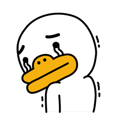
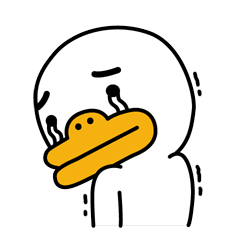

12월 모든 패키지 상품이 판매되었습니다.
1,609,900원
신사의 도시를 볼수있는 패키지!
여행기간 : 10일
등록기간 : 12월 ~ 19/1월
2,609,900원
품격의 도시를 볼수있는 패키지!
여행기간 : 10일
등록기간 : 12월 ~ 19/1월
2,779,900원
쉼터의 도시를 볼수있는 패키지!
여행기간 : 10일
등록기간 : 12월 ~ 19/1월

12월 모든 패키지 상품이 판매되었습니다.
해외 여행시 예방접종 필수
2층 버스와 여왕님으로 대표되는 영국의 수도 변덕스러운 날씨로도 유명한 런던은 6-7월이 여행하기 좋은 날씨로 꼽힌다. 빨간 2층 버스와 버킹엄궁전의 근위병 교대식, 빅벤과 타워브릿지같은 랜드마크가 유명하다. 중심가인 피카디리서커스는 쇼핑의 중심지이자 뮤지컬 극장들이 모여있는 곳이기도 하다. 윔블던 테니스 대회와 첼시, 아스널, 토트넘 같은 잉글랜드 프리미어 리그 런던 연고 구단의 경기 등 스포츠 팬들에게도 좋은 여행지.
프랑스의 수도이자 유럽의 대표도시 파리. 에펠탑, 개선문, 노트르담 대성당, 베르사유 궁전 같은 대표 건축물 부터, 오르셰 미술관과 루브르 박물관 까지, 파리는 짧은 일정으로 둘러보기 힘들 정도의 많은 랜드마크들과 예술 작품들이 있다. 미식의 나라로 불리는 프랑스답게 파리에도 에스까르고, 푸아그라, 바게트, 크레페 등 미식가들을 유혹하는 유명 레스토랑이 많다. 상대적으로 저렴한 비스트로 부터 고급 레스토랑까지 다양한 음식점이 있어, 여행객의 취향에 맞게 선택할 수 있다
스웨덴의 수도. 14개의 섬과 운하가 있어 '북유럽의 베네치아'라고 불린다. 북유럽만의 여유를 느낄 수 있다. 스톡홀름 왕궁, 노벨상 시상식이 열리는 스톡홀름 콘서트홀, 노벨 박물관, 바사호 박물관, 아바 박물관, 로얄 내셔널 시티파크, 스토르토리에트 광장 등 많은 명소가 있다. 교통수단이 잘 정비되어 있고, 특히 지하철 역사는 ' 세계에서 가장 긴 아트 갤러리'라는 별명을 가지며 역마다 하나의 예술작품처럼 꾸며놓아 지하철 투어가 있을 정도로 구경하는 재미가 있다. 미트볼이 대표적인 음식이다.
1703년 버킹엄 공작 셰필드의 저택으로 건축되었으며, 1761년 조지 3세가 이를 구입한 이후 왕실 건물이 되었다. 1825∼1936년 건축가 J.내시가 개축하였으며, 왕실의 소유가 된 뒤에도 당분간은 왕궁의 하나에 불과하였다. 1837년 빅토리아 여왕 즉위 뒤에 국왕들의 상주(常住)궁전이 되었다. 1946년 E.블로어와, 1913년 A.웨브가 동쪽 옆면을 증개축하였으며, 제2차 세계대전 때 독일군의 공습으로 피해를 입었다. 2만㎡의 호수를 포함한 17만 4000㎡의 대정원, 다수의 미술품을 소장한 미술관, 도서관 등이 있다. 현재 매일 시행되는 전통 복장의 근위병 교대는 버킹엄궁전의 명물이다.
빅 벤(Big Ben)은 영국 런던의 웨스트민스터 궁전 북쪽 끝에 있는 시계탑에 딸린 큰 종에 대한 별칭이다.시계탑의 정식 명칭은 엘리자베스 타워(Elizabeth Tower)이지만 흔히 종뿐만 아니라 시계탑 자체도 빅 벤이라고 부른다.시계탑의 4면에는 세계에서 가장 큰 자명종 시계가 달려 있고, 시계 자체도 독립 세워진 것들 가운데 세 번째로 높은 것이다. 2009년 5월 31일 건립 150주년을 축하하는 행사가 시계탑에서 있었다. 1858년에 세워진 빅 벤은 수많은 작품에서 런던을 상징하는 장소로 등장한 바 있으며, 매년 약 12,000명의 관광객이 찾는 대표적인 명소이기도 하다
웨스트민스터(Westminster)와 헝거포드다리(Hungerford Bridge) 사이의 템즈강변에 있는 주빌리 가든(Jubilee Gardens) 내에 위치한다. 1999년 영국항공(British Airways) 이 새로운 천년을 기념하여 건축한 것으로 커다란 자전거바퀴 모양을 한 회전 관람차이다. 높이 135m로 순수 관람용 건축물로는 세계에서 가장 높다

# 초코의 블로그
런던의 핫플레이스 설명
https://blog.naver.com/annal
# 레오의 블로그
런던의 맛집 설명
https://rungydyd.blog.me/221
# 허니의 블로그
런던의 문화 설명
https://blog.naver.com/dutlsd
건립될 당시 탑의 높이는 약 300m로 1930년 크라이슬러 빌딩의 완공 전까지 세계에서 가장 높은 고층건물이었고, 꼭대기에 첨탑, 안테나가 덧붙여져 320m 이상이 되었다. 착공 당시 에펠의 설계 구상은 흉물스럽다는 말이 있을 정도로 미학적, 건축적 측면에서 많은 반대를 받았다. 여태까지 한 번도 지어진 적이 없는 모양에다, 이집트의 가장 큰 피라미드보다 2배나 높은 검은 철물이 세워진다는 데 반감을 가졌다. 그러나 에펠은 적은 노동력과 싼 비용으로 25개월 만에 이 탑을 세워버렸다.
파리 근교의 베르사이유에 있는 바로크 양식의 대궁전으로, 루이 14세 궁전으로 세워진 프랑스 절대주의 왕제를 상징하는 건조물이다. 궁정을 호화롭게 장식해 권력과 재력을 내외에 과시하였으며, “짐이 곧 국가다”라고 말한 의도가 종합적으로 나타난 궁전이다. 정면 중앙 부분은 옛 건물을 보존하여 이질적이지만, 정원 쪽은 절도와 변화 있는 위용을 갖추어 각국 궁전의 모범이 된다. 호화로운 내장은 르브룅, 장대한 정원은 르 노트르, 건축은 르보 망사르가 담당하였다. 프랑스 절대주의 왕제를 상징하는 건조물이다.
루브르 박물관은 영국의 대영 박물관, 바티칸시티의 바티칸 박물관과 함께 세계 3대 박물관으로 꼽힌다. 1190년 지어졌을 당시에는 요새에 불과했지만 16세기 중반 왕궁으로 재건축되면서 그 규모가 커졌다. 1793년 궁전 일부가 중앙 미술관으로 사용되면서 루브르는 궁전의 틀을 벗고 박물관으로 탈바꿈하기 시작했다. 이후 5세기 동안 유럽 외 다양한 지역에서 수집한 회화, 조각 등 수많은 예술품은 오늘날 30만 점가량에 이른다. 전체를 다 돌아보려면 며칠은 걸리므로 관심 있는 작품이 있으면 그 위치를 파악해 미리 동선을 짜두는 것이 좋다.
# 루카의 블로그
파리의 핫플레이스 설명
https://blog.naver.com/dutlsd
# 로로의 블로그
파리의 맛집 설명
https://blog.naver.com/dsdf2
# 파워의 브로그
파리의 문화 설명
https://blog.naver.com/dutl12
2001년 노벨상 제정 100주년을 기념해 문을 연 박물관이다. 감라스탄의 왕궁 근처에 있어 찾아가기 쉽다. 역 대 노벨상 수상자 자료를 모두 전시하고 있으며 수상자들과 관련된 짧은 영상을 개관 시간 내내 상영한다. 700여 점이 넘는 오리지널 발명품과 초기 컴퓨터가 전시되어 있으며, 세계를 바꾼 발명품인 다이너마이트, 다양한 발명 모형, 책 등도 함께 볼 수 있다. 박물관 자료가 그리 풍부하지 않아서 약간 실망스러울 수도 있지만 역대 노벨상 수상자들의 모습을 한자리에서 만나볼 수 있다는 점에서 뜻깊은 공간이다. 1층 카페의 의자 뒤에는 노벨상 수상자들의 친필 사인도 있다.
감라스탄 지구에 자리한 스웨덴 왕궁은 이탈리아의 바로크 양식과 프랑스의 로코코 양식이 결합된 건물이다. 13세기에 요새로 처음 지어진 후 왕궁으로 발전했으나, 1697년 대화재로 피해를 입어 오랜 복원 공사 끝에 1754년 완성되었다. 1982년까지 왕과 왕비가 실제로 거주하던 곳이었지만 스톡홀름 외곽의 드로트닝홀름 궁전으로 이사하면서 지금은 외교 사절단의 숙소나 왕족이 집무를 보는 장소로 이용되고 있다. 2월 23일부터 12월 30일까지 시기에 따라 정해진 시간에만 왕궁 내부를 일반에게 공개하기 때문에 운영 시간을 미리 확인하고 가야 한다.
언뜻 외관이 교회처럼 보이지만 1923년에 건축된 스톡홀름 시청 건물이다. 무엇보다 매년 12월, 노벨상 시상식 후 축하 연회가 열리는 곳으로 유명하다. 영어로 진행되는 가이드 투어에 참가해 내부를 관람할 수 있다. 가이드 투어의 백미는 역시 노벨상 시상식 연회가 열리는 황금의 방(Golden Hall). 무려 1900만 개의 금박 모자이크로 장식된 방이다. 높이 106m의 탑 꼭대기에서 바라보는 스톡홀름 시가지 모습도 장관이다
# 로이의 블로그
스톡홀름의 핫플레이스 설명
https://blog.naver.com/dutl12
# 묭의 블로그
스톡홀름의 맛집 설명
https://blog.naver.com/ddl12
# 광광의 블로그
스톡홀름의 문화 설명
https://blog.naver.com/jsh123